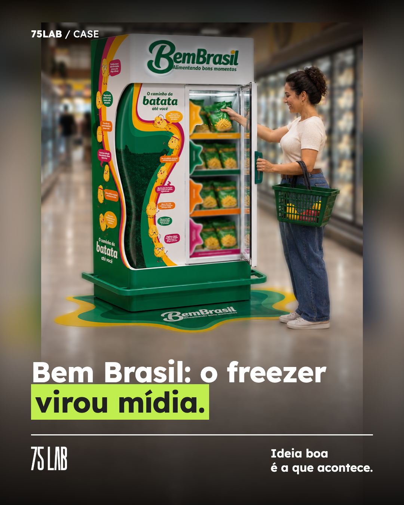
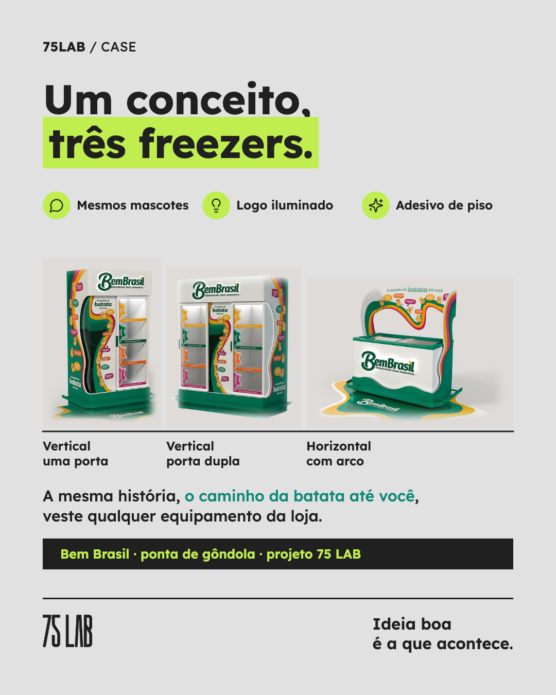
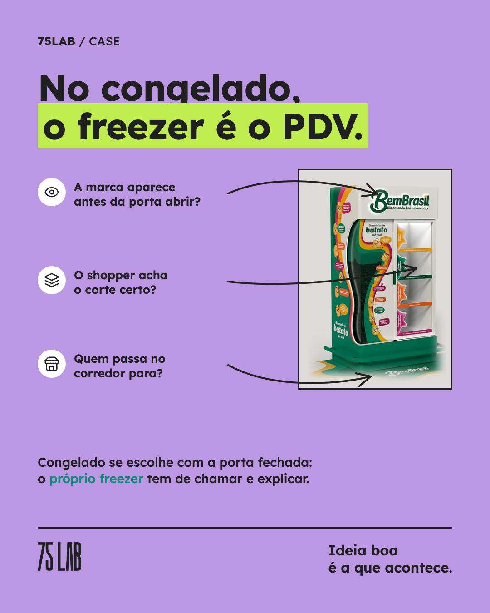
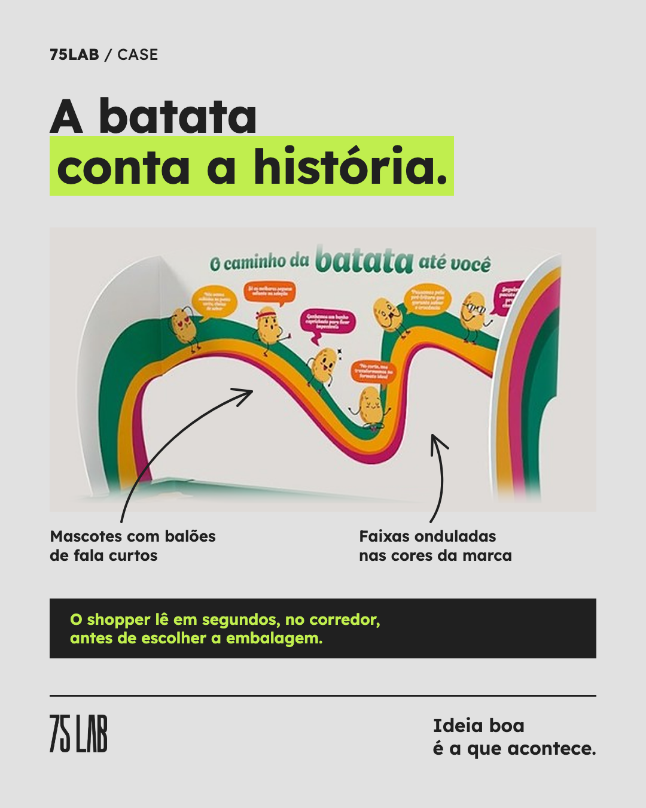
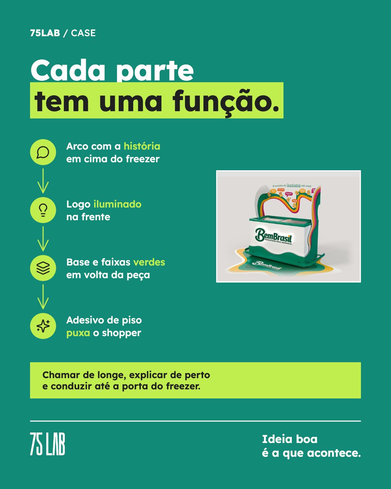
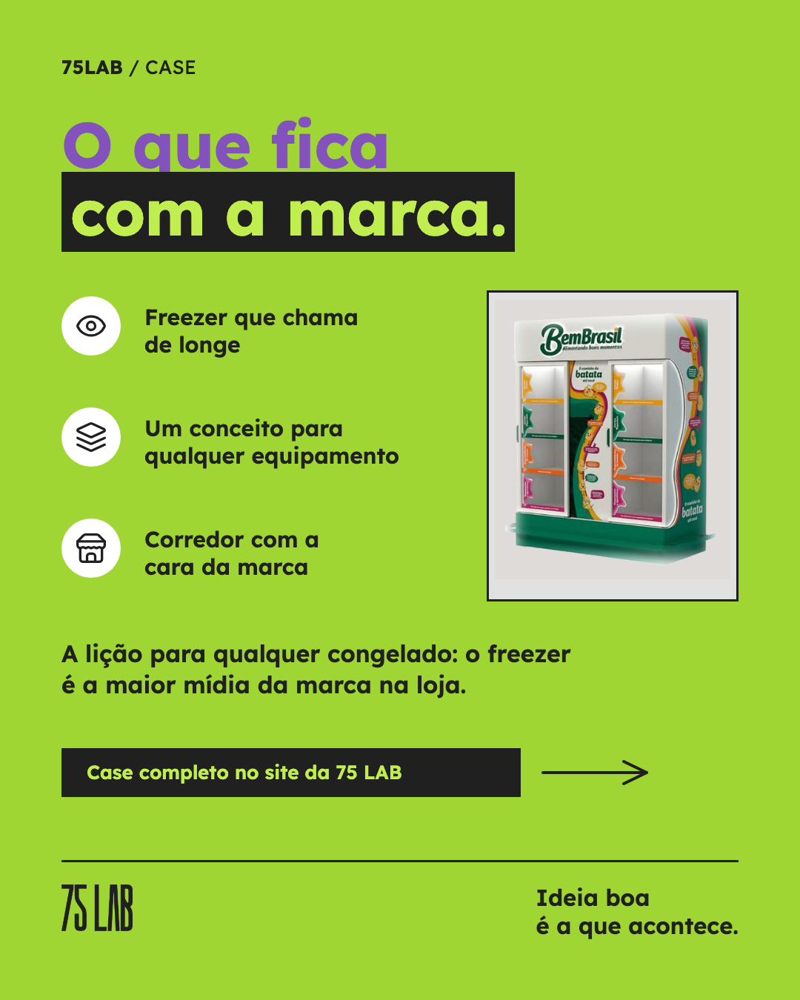
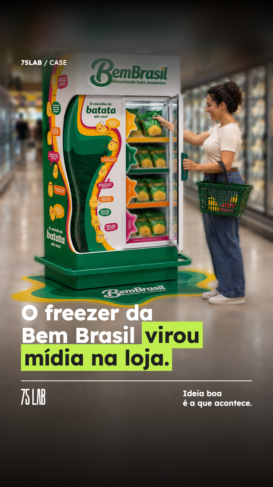
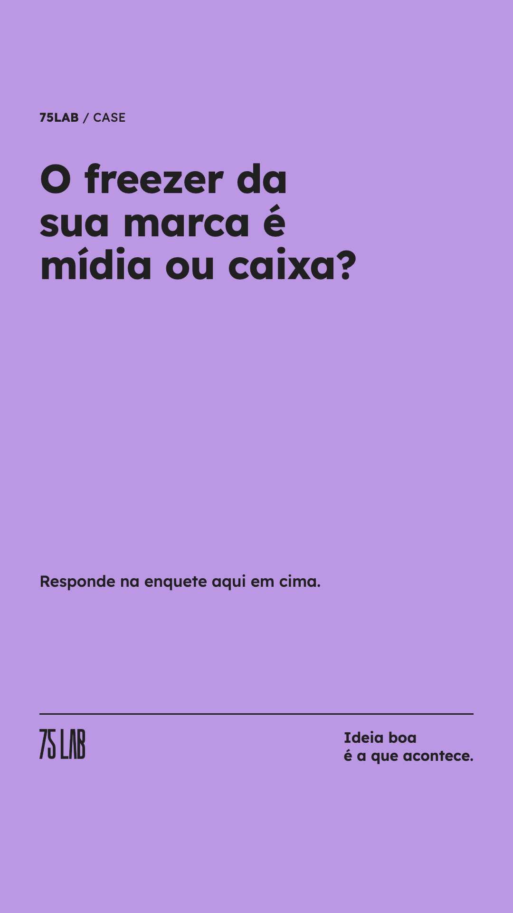
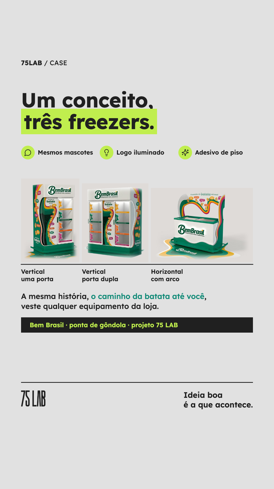
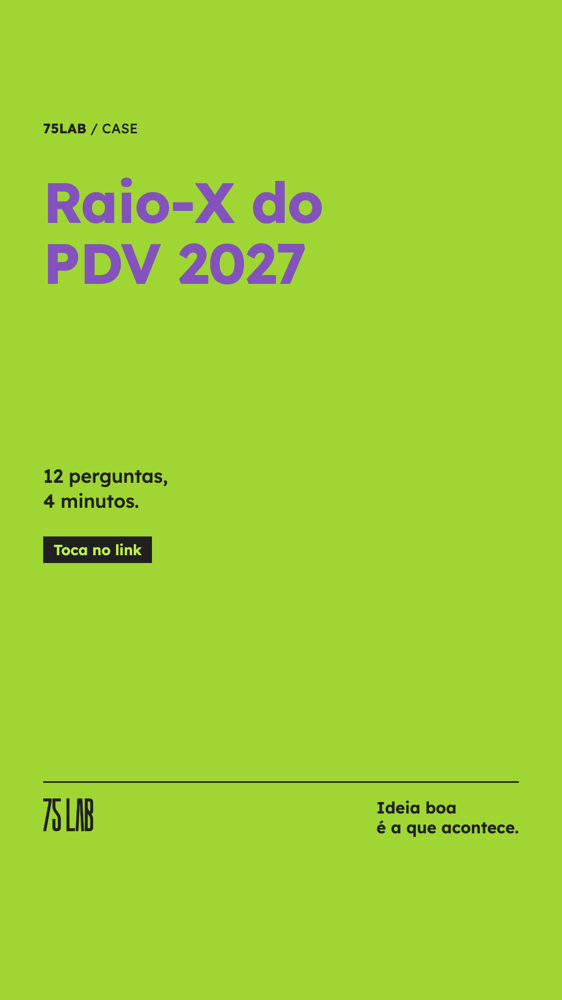

18/11 · case
Bem Brasil: o freezer que virou mídia, "o caminho da batata até você" em três equipamentos do corredor de congelados
No congelado, o shopper escolhe com a porta fechada e o freezer é o PDV. Para a Bem Brasil, a 75 LAB transformou o equipamento em mídia com um conceito só, "o caminho da batata até você": freezer vertical de uma porta, vertical de porta dupla e horizontal com arco, todos envelopados com mascotes, faixas onduladas, logo iluminado, etiquetas de corte nas prateleiras e adesivo de piso que conduz o shopper.
Toque em Aprovar, Pedir ajuste ou Não publicar em cada peça. Abre o GitHub com tudo preenchido: é só tocar em Submit new issue. No ajuste, escreva o que mudar. A rotina lê sua resposta na rodada seguinte (10h35, 12h35, 14h35 e 16h35) e o selo da peça muda aqui.
18/11 · sai a partir de 12:30
Instagram · carrossel












Legenda
No corredor de congelados, o produto fica atrás de uma porta fechada. Quem chama o shopper é o freezer. Para a Bem Brasil, transformamos o equipamento em mídia com um conceito só, "o caminho da batata até você": 1. Freezer vertical de uma porta, vertical de porta dupla e horizontal com arco, todos com a mesma história. 2. Logo iluminado na testeira para a marca aparecer de longe. 3. Mascotes de batata com balões de fala curtos, que o shopper lê em segundos. 4. Etiquetas nas prateleiras para achar o corte certo. 5. Adesivo de piso que puxa quem passa até a porta. O freezer é a maior mídia que a marca de congelado tem na loja 🥔 Case completo no site da 75 LAB. #trademarketing #pdv #congelados #merchandising #varejo
venceu sem aprovação
18/11 · sai a partir de 10:30
Texto da página da 75 LAB
No corredor de congelados, o shopper escolhe com a porta fechada. O freezer é o PDV, e quase sempre é desperdiçado como caixa branca. Para a Bem Brasil, a 75 LAB transformou o equipamento em mídia com um conceito só: "o caminho da batata até você". A mesma história veste três equipamentos: freezer vertical de uma porta, vertical de porta dupla e horizontal com arco. Como cada parte trabalha: 1. Testeira com logo iluminado: a marca aparece antes de a porta abrir. 2. Mascotes de batata com balões de fala curtos contam a história em segundos. 3. Etiquetas nas prateleiras ajudam a achar o corte certo. 4. Adesivo de piso conduz quem passa no corredor até a porta. O case está no site da 75 LAB: https://75lab.com.br/cases.html?utm_source=linkedin&utm_medium=post #trademarketing #pdv #congelados
Texto do seu perfil
No congelado, quem vende é o freezer. O produto fica atrás de uma porta fechada, e o shopper decide no corredor. Se o equipamento é uma caixa branca, a marca some. Com a Bem Brasil, a gente fez o contrário: um conceito só, "o caminho da batata até você", vestindo três freezers diferentes. Logo iluminado em cima, mascotes contando a história na lateral, etiqueta de corte na prateleira e um adesivo no piso puxando quem passa. O freezer é a maior mídia que a marca de congelado tem dentro da loja. Dá para usar melhor. O case está aqui: https://75lab.com.br/cases.html?utm_source=linkedin&utm_medium=post_perfil E se você cuida de PDV, me ajuda com 4 minutos no Raio-X do PDV 2027, a pesquisa que estamos fazendo com quem decide trade no Brasil: https://75lab.com.br/raio-x-pdv.html?utm_source=linkedin&utm_medium=post_perfil #trademarketing #pdv #varejo
venceu sem aprovação
18/11 · sai a partir de 14:30
Reels
Legenda
Bem Brasil: o freezer que virou mídia. Um conceito, "o caminho da batata até você", em três equipamentos do corredor de congelados. Case completo no site da 75 LAB. #trademarketing #pdv #congelados #varejo
Roteiro
3.0 s · 4.2 s · 4.4 s · 4.2 s · 4.4 s · 3.8 s · 3.4 s · No congelado, quem vende é o freezer. Case completo no site da 75 LAB
venceu sem aprovação
18/11 · sai a partir de 12:30
Stories








Indicação
Tela 1: sem sticker Tela 2: Enquete no meio da tela: "Mídia" / "Caixa branca" Tela 3: sem sticker Tela 4: Link para https://75lab.com.br/raio-x-pdv.html?utm_source=instagram&utm_medium=stories Vídeo com locução (stories-video): No corredor de congelados, quem vende é o freezer. Olha o que fizemos com a Bem Brasil. / Um conceito só, o caminho da batata até você, vestindo três freezers diferentes. / Congelado se escolhe com a porta fechada. O próprio freezer tem de chamar e explicar. / Os mascotes de batata contam a história em balões curtos, que se leem em segundos. / Logo iluminado, etiqueta de corte na prateleira e um adesivo no piso puxando quem passa. / E agora, uma ajuda: responde o Raio-X do PDV dois mil e vinte e sete. São doze perguntas, uns quatro minutos. O link está aqui.
venceu sem aprovação
Fontes